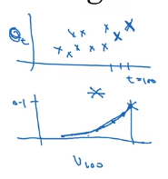
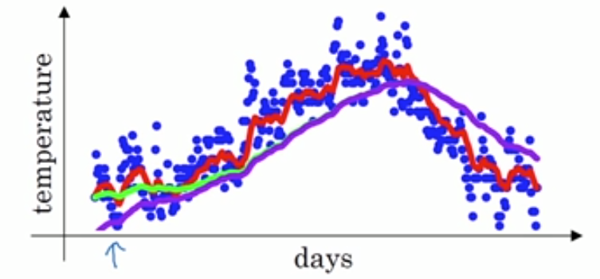

1. 指数加权平均
Vt=βVt−1+(1−β)θt
θt代表真实测量数据
Vt≈1−β1个过去的θ的平均。
当β较大时，V曲线抖动变小，但V曲线和θ曲线相比往右偏移（适应更缓慢）。
当β较小时，V曲线抖动变大，但V曲线与θ曲线更贴近。
2. 指数衰减
将Vt公式展开得：
Vt==(1−β)θt+(1−β)βθt−1+(1−β)β2θt−1+⋯i=0∑t(1−β)βiθt−i
每个θ的系数为\beta的指数，因此称为指数加权平均。
当有新的θ过来时，旧的θ呈指数衰减。
公式中t代表当前时间，i代表距离t有多远
(1−β)β1=β(1−β1)=e1≈0.35
当i>1−β1时，θt−i对Vt的影响很少（少于e1），认为不重要，因此说Vt≈1−β1个过去的θ的平均。

上面为原始数据，下面是权重。这张图让我想到了DSP里面的激励信号*原始信号，以前都无法理解信号里的卷积，现在看来好像是有点道理的。
3. 优点
目的是求过去n个值的平均值，相比于“过去n个值加以前再除以n”的方法，优点如下：
- low memory: 不需要真的存储过去的n个值。
- efficiency: 计算更简单，只是一个公式一行代码。
4. 修正偏差
目的：让指数加权平均的计算更准确

图中绿线和紫线的β相同。其中绿线为做过修改的加权平均，紫线未做修正的加权平均。区别在于紫线的起点较低。
修改方法为：
Vt=1−βtVt
当t比较小时，公式对Vt有很大的修改。
当t比较大时，Vt几乎无修正效果。
Note：修正只对初始阶段有效果。如果不care初始阶段的效果，可以不修正。
5. 参考资料
- https://blog.csdn.net/zhufenghao/article/details/80879260
- Ng的视频